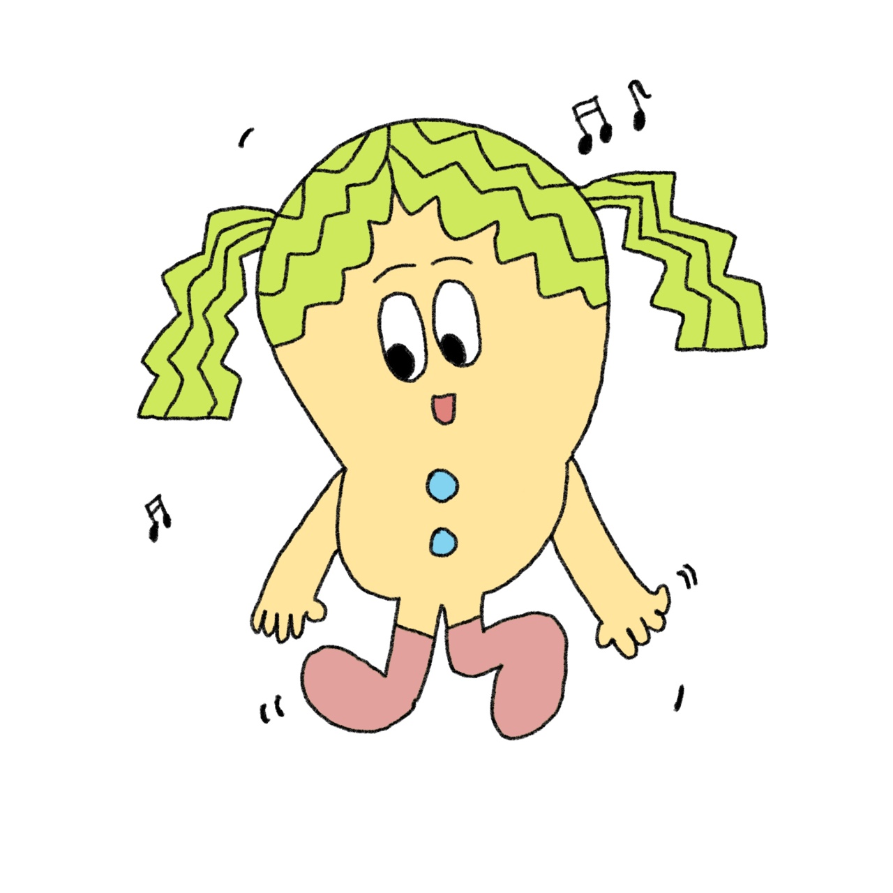

ESFP - 무용학과
- 외향적, 관찰적, 감정적, 미래지향적 성격특성을 가진 사람입니다.
- 이 사람들은 생생한 경험을 사랑하고 열정적으로 삶에 참여하고 미지의 발견을 즐깁니다. 그들은 매우 사교적일 수 있으며 종종 다른 사람들을 공유 활동으로 권장합니다.
- 무용과는 무용예술의 가치와 향유를 위한 연구에 중점을 두고 이론과 실기와 인성을 균형있게 갖춘 전문무용예술인 양성을 목표로 하고 있습니다. 급변하는 사회 속에서 정신적 가치와 정서적 교감의 중요성이 더욱 부각되는 시대의 요구에 부응하며 무용예슐의 폭넓은 이해와 가치 추구를 위하여 심층적 이론과 체계적이고 단계적인 무용원리의 학습이 가능한 교육과정을 지향하고 있습니다.